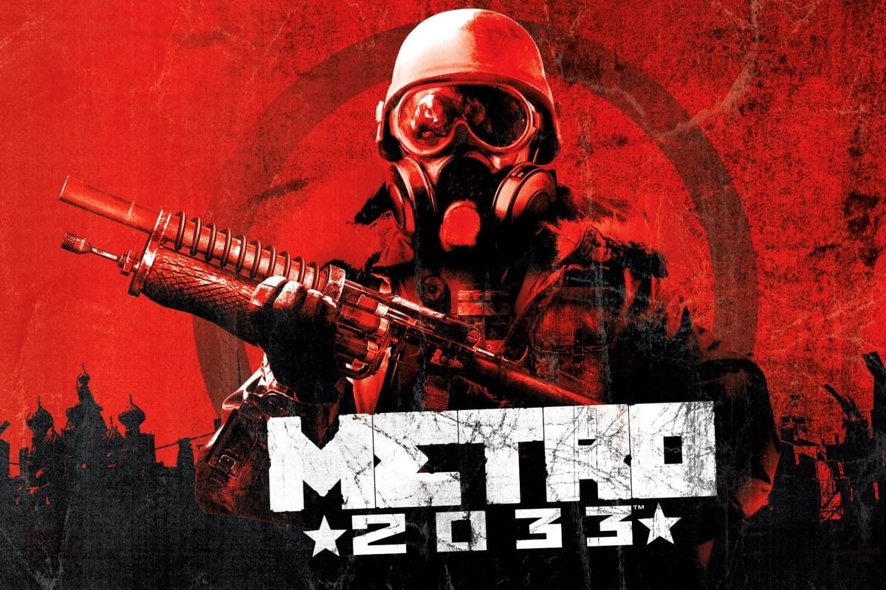

Metro 2033

Metro 2033 — видеоигра в жанрах FPS и Survival horror. Сюжет игры основывается на одноимённом романе Дмитрия Глуховского «Метро 2033». Разработкой игры занималась украинская компания 4A Games, большинство сотрудников которой ранее работали в GSC Game World, которая является разработчиком «S.T.A.L.K.E.R.» по мотивам произведения братьев Стругацких «Пикник на обочине».
«Metro 2033» разошлась в количестве свыше 1,5 млн копий. Такой результат считается провальным. Это связано с тем, что американский издатель «THQ» подошёл к рекламированию проекта недостаточно ответственно. По словам старшего вице-президента по глобальному маркетингу Рича Уильямса, «Metro 2033 хорошо встретили игроки и оценили критики, но нам стоит признать что тогда THQ очень мало рекламировала проект, о чём мы очень сожалеем. Поверьте, Metro: Last Light мы будем рекламировать достойным образом».
@2035 для связи с разработчиками +375291751320
электронная почта-staintimofej@gmail.com